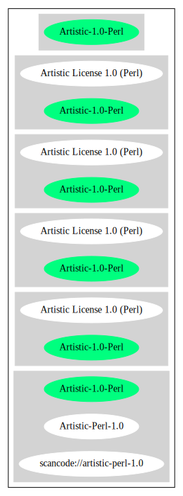

Key |
Value |
|---|---|
Fullname |
Artistic License 1.0 (Perl) |
Shortname |
Artistic-1.0-Perl |
Rating |
Unknown, probably Stop or No-Go |
Classification |
WeakCopyleft |
Other Names:
scancode://artistic-perl-1.0
Artistic-Perl-1.0
↑“Do note that the Artistic License is considered non-free by the FSF. They suggest to use the Clarified Artistic License (also called Artistic License 2.0) instead. However, the original Artistic License is still considered DFSG-free.” (source: Debian Free Software Guidelines)
↑“Is OSI Approved” (source: SPDX)
↓“Rating is: Lead” (source: BlueOak License List)
“Per SPDX.org, this is the Artistic License 1.0 found on the Perl site, which is different (particularly, clauses 5, 6, 7 and 8) than the Artistic License 1.0 w/clause 8 found on the OSI site. ” (source: Scancode)
Homepage: http://dev.perl.org/licenses/artistic.html
SPDX: http://spdx.org/licenses/Artistic-1.0-Perl.json
SPDX: https://spdx.org/licenses/Artistic-1.0-Perl.html
USE CASE Source code delivery
YOU MUST Forward Copyright notices
YOU MUST Forward Warranty disclaimer
IF Software modification
YOU MUST Provide Modification notice
YOU MUST Provide Modification report In Source code
YOU MUST Provide Modification date In Source code
EITHER
YOU MUST Publish Source code
ATTRIBUTE No charge
OR
YOU MUST Rename Source code
YOU MUST Provide Original source code
YOU MUST Provide Documentation
YOU MUST Provide Modification report
YOU MUST NOT Promote
USE CASE Binary delivery
EITHER
YOU MUST Provide Original source code
YOU MUST Reference Original source code
OR
IF Software modification
YOU MUST Provide Source code
ATTRIBUTE Machine-readable
YOU MUST NOT Promote
OR
IF Software modification
YOU MUST Rename Source code
YOU MUST Provide Modification report In Distribution material
YOU MUST Reference Original source code In Distribution material
YOU MUST NOT Promote
(source: OSADL License Checklist)
The "Artistic License"
Preamble
The intent of this document is to state the conditions under which a
Package may be copied, such that the Copyright Holder maintains some
semblance of artistic control over the development of the package,
while giving the users of the package the right to use and distribute
the Package in a more-or-less customary fashion, plus the right to make
reasonable modifications.
Definitions:
"Package" refers to the collection of files distributed by the
Copyright Holder, and derivatives of that collection of files
created through textual modification.
"Standard Version" refers to such a Package if it has not been
modified, or has been modified in accordance with the wishes
of the Copyright Holder as specified below.
"Copyright Holder" is whoever is named in the copyright or
copyrights for the package.
"You" is you, if you're thinking about copying or distributing
this Package.
"Reasonable copying fee" is whatever you can justify on the
basis of media cost, duplication charges, time of people involved,
and so on. (You will not be required to justify it to the
Copyright Holder, but only to the computing community at large
as a market that must bear the fee.)
"Freely Available" means that no fee is charged for the item
itself, though there may be fees involved in handling the item.
It also means that recipients of the item may redistribute it
under the same conditions they received it.
1. You may make and give away verbatim copies of the source form of the
Standard Version of this Package without restriction, provided that you
duplicate all of the original copyright notices and associated disclaimers.
2. You may apply bug fixes, portability fixes and other modifications
derived from the Public Domain or from the Copyright Holder. A Package
modified in such a way shall still be considered the Standard Version.
3. You may otherwise modify your copy of this Package in any way, provided
that you insert a prominent notice in each changed file stating how and
when you changed that file, and provided that you do at least ONE of the
following:
a) place your modifications in the Public Domain or otherwise make them
Freely Available, such as by posting said modifications to Usenet or
an equivalent medium, or placing the modifications on a major archive
site such as uunet.uu.net, or by allowing the Copyright Holder to include
your modifications in the Standard Version of the Package.
b) use the modified Package only within your corporation or organization.
c) rename any non-standard executables so the names do not conflict
with standard executables, which must also be provided, and provide
a separate manual page for each non-standard executable that clearly
documents how it differs from the Standard Version.
d) make other distribution arrangements with the Copyright Holder.
4. You may distribute the programs of this Package in object code or
executable form, provided that you do at least ONE of the following:
a) distribute a Standard Version of the executables and library files,
together with instructions (in the manual page or equivalent) on where
to get the Standard Version.
b) accompany the distribution with the machine-readable source of
the Package with your modifications.
c) give non-standard executables non-standard names, and clearly
document the differences in manual pages (or equivalent), together
with instructions on where to get the Standard Version.
d) make other distribution arrangements with the Copyright Holder.
5. You may charge a reasonable copying fee for any distribution of this
Package. You may charge any fee you choose for support of this
Package. You may not charge a fee for this Package itself. However,
you may distribute this Package in aggregate with other (possibly
commercial) programs as part of a larger (possibly commercial) software
distribution provided that you do not advertise this Package as a
product of your own. You may embed this Package's interpreter within
an executable of yours (by linking); this shall be construed as a mere
form of aggregation, provided that the complete Standard Version of the
interpreter is so embedded.
6. The scripts and library files supplied as input to or produced as
output from the programs of this Package do not automatically fall
under the copyright of this Package, but belong to whoever generated
them, and may be sold commercially, and may be aggregated with this
Package. If such scripts or library files are aggregated with this
Package via the so-called "undump" or "unexec" methods of producing a
binary executable image, then distribution of such an image shall
neither be construed as a distribution of this Package nor shall it
fall under the restrictions of Paragraphs 3 and 4, provided that you do
not represent such an executable image as a Standard Version of this
Package.
7. C subroutines (or comparably compiled subroutines in other
languages) supplied by you and linked into this Package in order to
emulate subroutines and variables of the language defined by this
Package shall not be considered part of this Package, but are the
equivalent of input as in Paragraph 6, provided these subroutines do
not change the language in any way that would cause it to fail the
regression tests for the language.
8. Aggregation of this Package with a commercial distribution is always
permitted provided that the use of this Package is embedded; that is,
when no overt attempt is made to make this Package's interfaces visible
to the end user of the commercial distribution. Such use shall not be
construed as a distribution of this Package.
9. The name of the Copyright Holder may not be used to endorse or promote
products derived from this software without specific prior written permission.
10. THIS PACKAGE IS PROVIDED "AS IS" AND WITHOUT ANY EXPRESS OR
IMPLIED WARRANTIES, INCLUDING, WITHOUT LIMITATION, THE IMPLIED
WARRANTIES OF MERCHANTIBILITY AND FITNESS FOR A PARTICULAR PURPOSE.
The End{
"__impliedNames": [
"Artistic-1.0-Perl",
"Artistic License 1.0 (Perl)",
"scancode://artistic-perl-1.0",
"Artistic-Perl-1.0"
],
"__impliedId": "Artistic-1.0-Perl",
"__impliedAmbiguousNames": [
"Artistic License"
],
"__impliedComments": [
[
"Scancode",
[
"Per SPDX.org, this is the Artistic License 1.0 found on the Perl site,\nwhich is different (particularly, clauses 5, 6, 7 and 8) than the Artistic\nLicense 1.0 w/clause 8 found on the OSI site.\n"
]
]
],
"facts": {
"SPDX": {
"isSPDXLicenseDeprecated": false,
"spdxFullName": "Artistic License 1.0 (Perl)",
"spdxDetailsURL": "http://spdx.org/licenses/Artistic-1.0-Perl.json",
"_sourceURL": "https://spdx.org/licenses/Artistic-1.0-Perl.html",
"spdxLicIsOSIApproved": true,
"spdxSeeAlso": [
"http://dev.perl.org/licenses/artistic.html"
],
"_implications": {
"__impliedNames": [
"Artistic-1.0-Perl",
"Artistic License 1.0 (Perl)"
],
"__impliedId": "Artistic-1.0-Perl",
"__impliedJudgement": [
[
"SPDX",
{
"tag": "PositiveJudgement",
"contents": "Is OSI Approved"
}
]
],
"__isOsiApproved": true,
"__impliedURLs": [
[
"SPDX",
"http://spdx.org/licenses/Artistic-1.0-Perl.json"
],
[
null,
"http://dev.perl.org/licenses/artistic.html"
]
]
},
"spdxLicenseId": "Artistic-1.0-Perl"
},
"OSADL License Checklist": {
"_sourceURL": "https://www.osadl.org/fileadmin/checklists/unreflicenses/Artistic-1.0-Perl.txt",
"spdxId": "Artistic-1.0-Perl",
"osadlRule": "USE CASE Source code delivery\n\tYOU MUST Forward Copyright notices\n\tYOU MUST Forward Warranty disclaimer\n\tIF Software modification\n\t\tYOU MUST Provide Modification notice\n\t\tYOU MUST Provide Modification report In Source code\n\t\tYOU MUST Provide Modification date In Source code\n\t\tEITHER\n\t\t\tYOU MUST Publish Source code\n\t\t\t\tATTRIBUTE No charge\r\n\t\tOR\r\n\t\t\tYOU MUST Rename Source code\n\t\t\tYOU MUST Provide Original source code\n\t\t\tYOU MUST Provide Documentation\n\t\t\t\tYOU MUST Provide Modification report\n\tYOU MUST NOT Promote\nUSE CASE Binary delivery\n\tEITHER\n\t\tYOU MUST Provide Original source code\n\t\tYOU MUST Reference Original source code\n\tOR\r\n\t\tIF Software modification\n\t\t\tYOU MUST Provide Source code\n\t\t\t\tATTRIBUTE Machine-readable\n\t\t\tYOU MUST NOT Promote\n\tOR\r\n\t\tIF Software modification\n\t\t\tYOU MUST Rename Source code\n\t\t\tYOU MUST Provide Modification report In Distribution material\n\t\t\tYOU MUST Reference Original source code In Distribution material\n\tYOU MUST NOT Promote\n",
"_implications": {
"__impliedNames": [
"Artistic-1.0-Perl"
]
}
},
"Scancode": {
"otherUrls": null,
"homepageUrl": "http://dev.perl.org/licenses/artistic.html",
"shortName": "Artistic-Perl-1.0",
"textUrls": null,
"text": "The \"Artistic License\"\n\n\t\t\t\tPreamble\n\nThe intent of this document is to state the conditions under which a\nPackage may be copied, such that the Copyright Holder maintains some\nsemblance of artistic control over the development of the package,\nwhile giving the users of the package the right to use and distribute\nthe Package in a more-or-less customary fashion, plus the right to make\nreasonable modifications.\n\nDefinitions:\n\n\t\"Package\" refers to the collection of files distributed by the\n\tCopyright Holder, and derivatives of that collection of files\n\tcreated through textual modification.\n\n\t\"Standard Version\" refers to such a Package if it has not been\n\tmodified, or has been modified in accordance with the wishes\n\tof the Copyright Holder as specified below.\n\n\t\"Copyright Holder\" is whoever is named in the copyright or\n\tcopyrights for the package.\n\n\t\"You\" is you, if you're thinking about copying or distributing\n\tthis Package.\n\n\t\"Reasonable copying fee\" is whatever you can justify on the\n\tbasis of media cost, duplication charges, time of people involved,\n\tand so on. (You will not be required to justify it to the\n\tCopyright Holder, but only to the computing community at large\n\tas a market that must bear the fee.)\n\n\t\"Freely Available\" means that no fee is charged for the item\n\titself, though there may be fees involved in handling the item.\n\tIt also means that recipients of the item may redistribute it\n\tunder the same conditions they received it.\n\n1. You may make and give away verbatim copies of the source form of the\nStandard Version of this Package without restriction, provided that you\nduplicate all of the original copyright notices and associated disclaimers.\n\n2. You may apply bug fixes, portability fixes and other modifications\nderived from the Public Domain or from the Copyright Holder. A Package\nmodified in such a way shall still be considered the Standard Version.\n\n3. You may otherwise modify your copy of this Package in any way, provided\nthat you insert a prominent notice in each changed file stating how and\nwhen you changed that file, and provided that you do at least ONE of the\nfollowing:\n\n a) place your modifications in the Public Domain or otherwise make them\n Freely Available, such as by posting said modifications to Usenet or\n an equivalent medium, or placing the modifications on a major archive\n site such as uunet.uu.net, or by allowing the Copyright Holder to include\n your modifications in the Standard Version of the Package.\n\n b) use the modified Package only within your corporation or organization.\n\n c) rename any non-standard executables so the names do not conflict\n with standard executables, which must also be provided, and provide\n a separate manual page for each non-standard executable that clearly\n documents how it differs from the Standard Version.\n\n d) make other distribution arrangements with the Copyright Holder.\n\n4. You may distribute the programs of this Package in object code or\nexecutable form, provided that you do at least ONE of the following:\n\n a) distribute a Standard Version of the executables and library files,\n together with instructions (in the manual page or equivalent) on where\n to get the Standard Version.\n\n b) accompany the distribution with the machine-readable source of\n the Package with your modifications.\n\n c) give non-standard executables non-standard names, and clearly\n document the differences in manual pages (or equivalent), together\n with instructions on where to get the Standard Version.\n\n d) make other distribution arrangements with the Copyright Holder.\n\n5. You may charge a reasonable copying fee for any distribution of this\nPackage. You may charge any fee you choose for support of this\nPackage. You may not charge a fee for this Package itself. However,\nyou may distribute this Package in aggregate with other (possibly\ncommercial) programs as part of a larger (possibly commercial) software\ndistribution provided that you do not advertise this Package as a\nproduct of your own. You may embed this Package's interpreter within\nan executable of yours (by linking); this shall be construed as a mere\nform of aggregation, provided that the complete Standard Version of the\ninterpreter is so embedded.\n\n6. The scripts and library files supplied as input to or produced as\noutput from the programs of this Package do not automatically fall\nunder the copyright of this Package, but belong to whoever generated\nthem, and may be sold commercially, and may be aggregated with this\nPackage. If such scripts or library files are aggregated with this\nPackage via the so-called \"undump\" or \"unexec\" methods of producing a\nbinary executable image, then distribution of such an image shall\nneither be construed as a distribution of this Package nor shall it\nfall under the restrictions of Paragraphs 3 and 4, provided that you do\nnot represent such an executable image as a Standard Version of this\nPackage.\n\n7. C subroutines (or comparably compiled subroutines in other\nlanguages) supplied by you and linked into this Package in order to\nemulate subroutines and variables of the language defined by this\nPackage shall not be considered part of this Package, but are the\nequivalent of input as in Paragraph 6, provided these subroutines do\nnot change the language in any way that would cause it to fail the\nregression tests for the language.\n\n8. Aggregation of this Package with a commercial distribution is always\npermitted provided that the use of this Package is embedded; that is,\nwhen no overt attempt is made to make this Package's interfaces visible\nto the end user of the commercial distribution. Such use shall not be\nconstrued as a distribution of this Package.\n\n9. The name of the Copyright Holder may not be used to endorse or promote\nproducts derived from this software without specific prior written permission.\n\n10. THIS PACKAGE IS PROVIDED \"AS IS\" AND WITHOUT ANY EXPRESS OR\nIMPLIED WARRANTIES, INCLUDING, WITHOUT LIMITATION, THE IMPLIED\nWARRANTIES OF MERCHANTIBILITY AND FITNESS FOR A PARTICULAR PURPOSE.\n\n\t\t\t\tThe End",
"category": "Copyleft Limited",
"osiUrl": null,
"owner": "Perl Foundation",
"_sourceURL": "https://github.com/nexB/scancode-toolkit/blob/develop/src/licensedcode/data/licenses/artistic-perl-1.0.yml",
"key": "artistic-perl-1.0",
"name": "Artistic License (Perl) 1.0",
"spdxId": "Artistic-1.0-Perl",
"notes": "Per SPDX.org, this is the Artistic License 1.0 found on the Perl site,\nwhich is different (particularly, clauses 5, 6, 7 and 8) than the Artistic\nLicense 1.0 w/clause 8 found on the OSI site.\n",
"_implications": {
"__impliedNames": [
"scancode://artistic-perl-1.0",
"Artistic-Perl-1.0",
"Artistic-1.0-Perl"
],
"__impliedId": "Artistic-1.0-Perl",
"__impliedComments": [
[
"Scancode",
[
"Per SPDX.org, this is the Artistic License 1.0 found on the Perl site,\nwhich is different (particularly, clauses 5, 6, 7 and 8) than the Artistic\nLicense 1.0 w/clause 8 found on the OSI site.\n"
]
]
],
"__impliedCopyleft": [
[
"Scancode",
"WeakCopyleft"
]
],
"__calculatedCopyleft": "WeakCopyleft",
"__impliedText": "The \"Artistic License\"\n\n\t\t\t\tPreamble\n\nThe intent of this document is to state the conditions under which a\nPackage may be copied, such that the Copyright Holder maintains some\nsemblance of artistic control over the development of the package,\nwhile giving the users of the package the right to use and distribute\nthe Package in a more-or-less customary fashion, plus the right to make\nreasonable modifications.\n\nDefinitions:\n\n\t\"Package\" refers to the collection of files distributed by the\n\tCopyright Holder, and derivatives of that collection of files\n\tcreated through textual modification.\n\n\t\"Standard Version\" refers to such a Package if it has not been\n\tmodified, or has been modified in accordance with the wishes\n\tof the Copyright Holder as specified below.\n\n\t\"Copyright Holder\" is whoever is named in the copyright or\n\tcopyrights for the package.\n\n\t\"You\" is you, if you're thinking about copying or distributing\n\tthis Package.\n\n\t\"Reasonable copying fee\" is whatever you can justify on the\n\tbasis of media cost, duplication charges, time of people involved,\n\tand so on. (You will not be required to justify it to the\n\tCopyright Holder, but only to the computing community at large\n\tas a market that must bear the fee.)\n\n\t\"Freely Available\" means that no fee is charged for the item\n\titself, though there may be fees involved in handling the item.\n\tIt also means that recipients of the item may redistribute it\n\tunder the same conditions they received it.\n\n1. You may make and give away verbatim copies of the source form of the\nStandard Version of this Package without restriction, provided that you\nduplicate all of the original copyright notices and associated disclaimers.\n\n2. You may apply bug fixes, portability fixes and other modifications\nderived from the Public Domain or from the Copyright Holder. A Package\nmodified in such a way shall still be considered the Standard Version.\n\n3. You may otherwise modify your copy of this Package in any way, provided\nthat you insert a prominent notice in each changed file stating how and\nwhen you changed that file, and provided that you do at least ONE of the\nfollowing:\n\n a) place your modifications in the Public Domain or otherwise make them\n Freely Available, such as by posting said modifications to Usenet or\n an equivalent medium, or placing the modifications on a major archive\n site such as uunet.uu.net, or by allowing the Copyright Holder to include\n your modifications in the Standard Version of the Package.\n\n b) use the modified Package only within your corporation or organization.\n\n c) rename any non-standard executables so the names do not conflict\n with standard executables, which must also be provided, and provide\n a separate manual page for each non-standard executable that clearly\n documents how it differs from the Standard Version.\n\n d) make other distribution arrangements with the Copyright Holder.\n\n4. You may distribute the programs of this Package in object code or\nexecutable form, provided that you do at least ONE of the following:\n\n a) distribute a Standard Version of the executables and library files,\n together with instructions (in the manual page or equivalent) on where\n to get the Standard Version.\n\n b) accompany the distribution with the machine-readable source of\n the Package with your modifications.\n\n c) give non-standard executables non-standard names, and clearly\n document the differences in manual pages (or equivalent), together\n with instructions on where to get the Standard Version.\n\n d) make other distribution arrangements with the Copyright Holder.\n\n5. You may charge a reasonable copying fee for any distribution of this\nPackage. You may charge any fee you choose for support of this\nPackage. You may not charge a fee for this Package itself. However,\nyou may distribute this Package in aggregate with other (possibly\ncommercial) programs as part of a larger (possibly commercial) software\ndistribution provided that you do not advertise this Package as a\nproduct of your own. You may embed this Package's interpreter within\nan executable of yours (by linking); this shall be construed as a mere\nform of aggregation, provided that the complete Standard Version of the\ninterpreter is so embedded.\n\n6. The scripts and library files supplied as input to or produced as\noutput from the programs of this Package do not automatically fall\nunder the copyright of this Package, but belong to whoever generated\nthem, and may be sold commercially, and may be aggregated with this\nPackage. If such scripts or library files are aggregated with this\nPackage via the so-called \"undump\" or \"unexec\" methods of producing a\nbinary executable image, then distribution of such an image shall\nneither be construed as a distribution of this Package nor shall it\nfall under the restrictions of Paragraphs 3 and 4, provided that you do\nnot represent such an executable image as a Standard Version of this\nPackage.\n\n7. C subroutines (or comparably compiled subroutines in other\nlanguages) supplied by you and linked into this Package in order to\nemulate subroutines and variables of the language defined by this\nPackage shall not be considered part of this Package, but are the\nequivalent of input as in Paragraph 6, provided these subroutines do\nnot change the language in any way that would cause it to fail the\nregression tests for the language.\n\n8. Aggregation of this Package with a commercial distribution is always\npermitted provided that the use of this Package is embedded; that is,\nwhen no overt attempt is made to make this Package's interfaces visible\nto the end user of the commercial distribution. Such use shall not be\nconstrued as a distribution of this Package.\n\n9. The name of the Copyright Holder may not be used to endorse or promote\nproducts derived from this software without specific prior written permission.\n\n10. THIS PACKAGE IS PROVIDED \"AS IS\" AND WITHOUT ANY EXPRESS OR\nIMPLIED WARRANTIES, INCLUDING, WITHOUT LIMITATION, THE IMPLIED\nWARRANTIES OF MERCHANTIBILITY AND FITNESS FOR A PARTICULAR PURPOSE.\n\n\t\t\t\tThe End",
"__impliedURLs": [
[
"Homepage",
"http://dev.perl.org/licenses/artistic.html"
]
]
}
},
"Debian Free Software Guidelines": {
"LicenseName": "Artistic License",
"State": "DFSGCompatible",
"_sourceURL": "https://wiki.debian.org/DFSGLicenses",
"_implications": {
"__impliedNames": [
"Artistic-1.0-Perl"
],
"__impliedAmbiguousNames": [
"Artistic License"
],
"__impliedJudgement": [
[
"Debian Free Software Guidelines",
{
"tag": "PositiveJudgement",
"contents": "Do note that the Artistic License is considered non-free by the FSF. They suggest to use the Clarified Artistic License (also called Artistic License 2.0) instead. However, the original Artistic License is still considered DFSG-free."
}
]
]
},
"Comment": "Do note that the Artistic License is considered non-free by the FSF. They suggest to use the Clarified Artistic License (also called Artistic License 2.0) instead. However, the original Artistic License is still considered DFSG-free.",
"LicenseId": "Artistic-1.0-Perl"
},
"BlueOak License List": {
"BlueOakRating": "Lead",
"url": "https://spdx.org/licenses/Artistic-1.0-Perl.html",
"isPermissive": true,
"_sourceURL": "https://blueoakcouncil.org/list",
"name": "Artistic License 1.0 (Perl)",
"id": "Artistic-1.0-Perl",
"_implications": {
"__impliedNames": [
"Artistic-1.0-Perl",
"Artistic License 1.0 (Perl)"
],
"__impliedJudgement": [
[
"BlueOak License List",
{
"tag": "NegativeJudgement",
"contents": "Rating is: Lead"
}
]
],
"__impliedCopyleft": [
[
"BlueOak License List",
"NoCopyleft"
]
],
"__calculatedCopyleft": "NoCopyleft",
"__impliedURLs": [
[
"SPDX",
"https://spdx.org/licenses/Artistic-1.0-Perl.html"
]
]
}
},
"finos/OSLC-handbook": {
"terms": [
{
"termUseCases": [
"US"
],
"termSeeAlso": null,
"termDescription": "Retain all notices",
"termComplianceNotes": "Copyright notices and other notices",
"termType": "condition"
},
{
"termUseCases": [
"MB",
"MS"
],
"termSeeAlso": null,
"termDescription": "Notice of modifications",
"termComplianceNotes": "Modified files must have \"prominent notice\" in each file stating how the file was modified and when",
"termType": "condition"
},
{
"termUseCases": [
"MB",
"MS"
],
"termSeeAlso": null,
"termDescription": "Provide access to modifications",
"termComplianceNotes": "Do at least one of the following: place modification in the public domain or otherwise make them freely available; OR rename non-standard executables; OR \"make other distribution arrangements\" with the copyright holder (see section 3 for more details).",
"termType": "condition"
},
{
"termUseCases": [
"UB",
"MB"
],
"termSeeAlso": null,
"termDescription": "Access to source",
"termComplianceNotes": "Do at least one of the following: provide a Standard Version of the executables and library files; OR provide source for your modifications; OR give non-standard executables non-standard name and document the differences with instructions on where to get the Standard Version; OR \"make other distribution arrangements\" with the copyright holder (see section 4 for more details)",
"termType": "condition"
},
{
"termUseCases": [
"UB",
"MB",
"US",
"MS"
],
"termSeeAlso": null,
"termDescription": "You may distribute this package as part of a larger (commercial) distribution, but cannot charge a fee for the standalone package. You may charge a reasonable fee for copying or support.",
"termComplianceNotes": null,
"termType": "condition"
},
{
"termUseCases": null,
"termSeeAlso": null,
"termDescription": "The following are not considered part of the package or do not fall under copyright of this package and subject to the license: scripts and library files supplied as input to or produced as output from the program; C subroutines (or comparably compiled subroutines in other languages) supplied by you and linked into this Package in order to emulate subroutines and variables of the language defined by this package; aggregation of this package with other software where the package is embedded and the interfaces are not visible to the end user (see sections 6, 7, and 8 for more details)",
"termComplianceNotes": null,
"termType": "other"
}
],
"_sourceURL": "https://github.com/finos/OSLC-handbook/blob/master/src/Artistic-1.0-Perl.yaml",
"name": "Artistic License 1.0 (Perl)",
"nameFromFilename": "Artistic-1.0-Perl",
"notes": "This is the Artistic License 1.0 found on the Perl site, which is different (particularly, clauses 5, 6, 7 and 8) than the Artistic License 1.0 w/clause 8 found on the OSI site. This license has specific use cases and conditions that are difficult to summarize; please see sections 5-8 and relevant definitions for more details.",
"_implications": {
"__impliedNames": [
"Artistic-1.0-Perl",
"Artistic License 1.0 (Perl)"
]
},
"licenseId": [
"Artistic-1.0-Perl",
"Artistic License 1.0 (Perl)"
]
}
},
"__impliedJudgement": [
[
"BlueOak License List",
{
"tag": "NegativeJudgement",
"contents": "Rating is: Lead"
}
],
[
"Debian Free Software Guidelines",
{
"tag": "PositiveJudgement",
"contents": "Do note that the Artistic License is considered non-free by the FSF. They suggest to use the Clarified Artistic License (also called Artistic License 2.0) instead. However, the original Artistic License is still considered DFSG-free."
}
],
[
"SPDX",
{
"tag": "PositiveJudgement",
"contents": "Is OSI Approved"
}
]
],
"__impliedCopyleft": [
[
"BlueOak License List",
"NoCopyleft"
],
[
"Scancode",
"WeakCopyleft"
]
],
"__calculatedCopyleft": "WeakCopyleft",
"__isOsiApproved": true,
"__impliedText": "The \"Artistic License\"\n\n\t\t\t\tPreamble\n\nThe intent of this document is to state the conditions under which a\nPackage may be copied, such that the Copyright Holder maintains some\nsemblance of artistic control over the development of the package,\nwhile giving the users of the package the right to use and distribute\nthe Package in a more-or-less customary fashion, plus the right to make\nreasonable modifications.\n\nDefinitions:\n\n\t\"Package\" refers to the collection of files distributed by the\n\tCopyright Holder, and derivatives of that collection of files\n\tcreated through textual modification.\n\n\t\"Standard Version\" refers to such a Package if it has not been\n\tmodified, or has been modified in accordance with the wishes\n\tof the Copyright Holder as specified below.\n\n\t\"Copyright Holder\" is whoever is named in the copyright or\n\tcopyrights for the package.\n\n\t\"You\" is you, if you're thinking about copying or distributing\n\tthis Package.\n\n\t\"Reasonable copying fee\" is whatever you can justify on the\n\tbasis of media cost, duplication charges, time of people involved,\n\tand so on. (You will not be required to justify it to the\n\tCopyright Holder, but only to the computing community at large\n\tas a market that must bear the fee.)\n\n\t\"Freely Available\" means that no fee is charged for the item\n\titself, though there may be fees involved in handling the item.\n\tIt also means that recipients of the item may redistribute it\n\tunder the same conditions they received it.\n\n1. You may make and give away verbatim copies of the source form of the\nStandard Version of this Package without restriction, provided that you\nduplicate all of the original copyright notices and associated disclaimers.\n\n2. You may apply bug fixes, portability fixes and other modifications\nderived from the Public Domain or from the Copyright Holder. A Package\nmodified in such a way shall still be considered the Standard Version.\n\n3. You may otherwise modify your copy of this Package in any way, provided\nthat you insert a prominent notice in each changed file stating how and\nwhen you changed that file, and provided that you do at least ONE of the\nfollowing:\n\n a) place your modifications in the Public Domain or otherwise make them\n Freely Available, such as by posting said modifications to Usenet or\n an equivalent medium, or placing the modifications on a major archive\n site such as uunet.uu.net, or by allowing the Copyright Holder to include\n your modifications in the Standard Version of the Package.\n\n b) use the modified Package only within your corporation or organization.\n\n c) rename any non-standard executables so the names do not conflict\n with standard executables, which must also be provided, and provide\n a separate manual page for each non-standard executable that clearly\n documents how it differs from the Standard Version.\n\n d) make other distribution arrangements with the Copyright Holder.\n\n4. You may distribute the programs of this Package in object code or\nexecutable form, provided that you do at least ONE of the following:\n\n a) distribute a Standard Version of the executables and library files,\n together with instructions (in the manual page or equivalent) on where\n to get the Standard Version.\n\n b) accompany the distribution with the machine-readable source of\n the Package with your modifications.\n\n c) give non-standard executables non-standard names, and clearly\n document the differences in manual pages (or equivalent), together\n with instructions on where to get the Standard Version.\n\n d) make other distribution arrangements with the Copyright Holder.\n\n5. You may charge a reasonable copying fee for any distribution of this\nPackage. You may charge any fee you choose for support of this\nPackage. You may not charge a fee for this Package itself. However,\nyou may distribute this Package in aggregate with other (possibly\ncommercial) programs as part of a larger (possibly commercial) software\ndistribution provided that you do not advertise this Package as a\nproduct of your own. You may embed this Package's interpreter within\nan executable of yours (by linking); this shall be construed as a mere\nform of aggregation, provided that the complete Standard Version of the\ninterpreter is so embedded.\n\n6. The scripts and library files supplied as input to or produced as\noutput from the programs of this Package do not automatically fall\nunder the copyright of this Package, but belong to whoever generated\nthem, and may be sold commercially, and may be aggregated with this\nPackage. If such scripts or library files are aggregated with this\nPackage via the so-called \"undump\" or \"unexec\" methods of producing a\nbinary executable image, then distribution of such an image shall\nneither be construed as a distribution of this Package nor shall it\nfall under the restrictions of Paragraphs 3 and 4, provided that you do\nnot represent such an executable image as a Standard Version of this\nPackage.\n\n7. C subroutines (or comparably compiled subroutines in other\nlanguages) supplied by you and linked into this Package in order to\nemulate subroutines and variables of the language defined by this\nPackage shall not be considered part of this Package, but are the\nequivalent of input as in Paragraph 6, provided these subroutines do\nnot change the language in any way that would cause it to fail the\nregression tests for the language.\n\n8. Aggregation of this Package with a commercial distribution is always\npermitted provided that the use of this Package is embedded; that is,\nwhen no overt attempt is made to make this Package's interfaces visible\nto the end user of the commercial distribution. Such use shall not be\nconstrued as a distribution of this Package.\n\n9. The name of the Copyright Holder may not be used to endorse or promote\nproducts derived from this software without specific prior written permission.\n\n10. THIS PACKAGE IS PROVIDED \"AS IS\" AND WITHOUT ANY EXPRESS OR\nIMPLIED WARRANTIES, INCLUDING, WITHOUT LIMITATION, THE IMPLIED\nWARRANTIES OF MERCHANTIBILITY AND FITNESS FOR A PARTICULAR PURPOSE.\n\n\t\t\t\tThe End",
"__impliedURLs": [
[
"SPDX",
"http://spdx.org/licenses/Artistic-1.0-Perl.json"
],
[
null,
"http://dev.perl.org/licenses/artistic.html"
],
[
"SPDX",
"https://spdx.org/licenses/Artistic-1.0-Perl.html"
],
[
"Homepage",
"http://dev.perl.org/licenses/artistic.html"
]
]
}